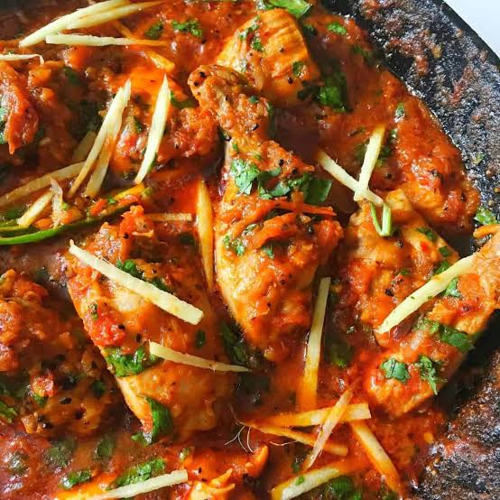

Karahi
Home

Description
Chicken Karahi is a popular Pakistani dish made with chicken, tomatoes, green chillies, and aromatic spices. It is cooked in a karahi until the chicken becomes tender and the gravy becomes rich and flavorful.
Ingredients
- 1 kg chicken
- 4 tomatoes
- 2 tablespoons ginger-garlic paste
- 4 green chillies
- 1/2 cup cooking oil
- 1 teaspoon red chilli powder
- 1 teaspoon coriander powder
- Salt to taste
- Fresh ginger and coriander for garnish
Steps
- Heat the oil in a karahi.
- Add the chicken and cook until its color changes.
- Add ginger-garlic paste and cook for a few minutes.
- Add chopped tomatoes, salt, and spices.
- Cook until the chicken is tender and the tomatoes form a thick gravy.
- Add green chillies and sliced ginger.
- Garnish with fresh coriander and serve hot.